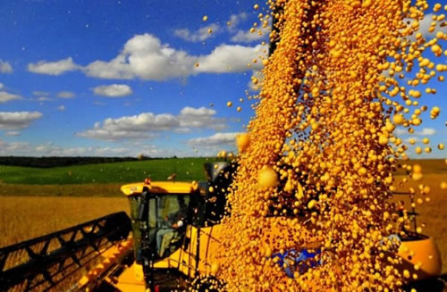

Real Chubut - Agencia de Noticias


Al ritmo del dólar y el calor

…que, sin duda, las muy altas temperaturas y los igualmente altos niveles del dólar, constituyeron los ejes de los últimos días para la comunidad empresaria que, en el caso del campo, tuvo como con elemento adicional la "reaparición" de los informes del USDA (que no resultaron como se esperaban), lo que obligó a recalcular las próximas operaciones para no quedar descalzados. Es que si bien las condiciones generales de los cultivos mejoraron respecto al muy lluvioso enero, lo que está permitiendo algunos rindes excepcionales, ahora comienza a faltar algo de agua y, las temperaturas excesivas también están provocando daños de diversa magnitud. De hecho, en el caso del tambo, las caídas de producción rondaron 30%-35%, lo que ya se está sintiendo también en las góndolas, prendiéndose los alertas en varias reparticiones ligadas al consumo interno. Otros datos que causaron malestar en los despachos oficiales fueron los acuerdos salariales bien por encima de 40%, que firmaron algunos gremios también relacionados con alimentos, o el informe del Autotransporte de Cargas, indicando que los costos crecieron 62% en los últimos 12 meses y un 3% en enero, según consignó Fadeeac, que también destacó que la suba se justifica por los aumentos de distintos costos, incluida la carga, de los impuestos, que alcanzan el 40%, todo lo cual también contribuirá para "sostener" los precios de los alimentos también en febrero.
…que, desde Dubái, donde está una delegación del IPCVA promocionando las carnes vacunas argentinas, también llegaron algunos ecos de la fuerte suba (algo adelantada) que se dio en los vacunos (y la carne) en la última quincena, producto también de fuertes pérdidas por inundación, el estrés calórico, y relativa baja oferta de terneros, en una actividad que, si bien enfrenta un mercado interno relativamente flojo, presenta buenas perspectivas de exportación. Igual, la mejora de las "macro", en muchos casos llega muy tarde (o no llega) a la micro, ya que los productores más chicos, o los de las zonas con mayores daños por las inundaciones, no solo no se pueden reponer solos de las pérdidas, sino que tampoco acceden a los créditos, ni públicos, ni privados, según comentaban varios operadores en la exposición asiática, mientras aguardan la nueva fecha para la reunión de la cadena de la carne que encabeza el propio presidente Mauricio Macri, que se suspendió en enero pasado (con un argumento poco creíble), y que debería realizarse en los primeros días de marzo.
…que, mientras se conocía el fuerte retroceso de la actividad industrial en enero que, según los indicadores de Fiel "tras retroceder 2.8% en 2018, la industria se contrajo otro 8.5% en enero", en Cuyo cayó bastante bien la formación del Fondo Anticíclico de la actividad vitivinícola que intentará atenuar el jaque por el que se atraviesa (y que hasta puso en riesgo la tradicional Fiesta de la Vendimia) a partir de la fuerte caída de la demanda interna, y de las exportaciones que, aunque algo mayores, solo crecieron las de "granel" que, en general, suelen ser las de vinos más baratos. Mientras, el 15 de febrero finalizaron los plazos para la oposición de acreedores y la eventual obtención de embargos de la fusión de los mercados de futuros del MatBa de Buenos Aires, con el Rofex de Rosario. El monto total de embargos ordenados a dicha fecha no alcanza los $2 millones, siendo insignificante en relación a los activos de Rofex Inversora y Acsa Inversora", consigna el comunicado oficial . Ahora se espera que en pocos meses se finalice la integración operativa y que antes de mediados de año MATba y ROFEX sean ya un solo Mercado. Por otra parte, las valuaciones de ambos realizadas por Columbus Zuma, base de la relación de canje de la fusión, alcanzaban los u$s274 millones, cifra que revalidada por diversas operaciones de compra de acciones de ambos Mercados que se realizaron en las últimas semanas.
…que, muy alto impacto va a tener la difusión del nuevo Índice de Competitividad que elaboró Ecolatina para Coninagro y que presentado ayer en la sede de la entidad cooperativa, por su presidente, el mendocino Carlos Ianizzotto. Es que el estudio que medirá a partir de ahora, el impacto socio-económico sobre más de 30 rubros de economías extrapampeanas, ya consigna un dato muy negativo para las autoridades, pues muestra un retroceso global de 3,4% en el 4º trimestre del 18 vs. el 17, por lo que el año finalizó por debajo de los niveles de 2015 y de 2017. Desagregado, surge la caída se debe a resultados negativos en la mayoría de los ítems medidos, como Infraestructura (- 30,2%), mano de obra ( -4%), entorno macro (- 20,6%), o desempeño económico (-7,8%), mientras que solo la producción de recursos naturales ( +3,3%), y el sector externo ( +17,8%) mostraron resultados positivos, siempre comparando los últimos trimestres de ambos años (18 vs. 17). A partir de ahí, el desagregado en 36 rubros muestra un alarmante retroceso en 32 de ellos contra solo 4 que muestran algún grado de avance (peras, manzanas, granos, y vinos y mostos).
Fuente: Ambito